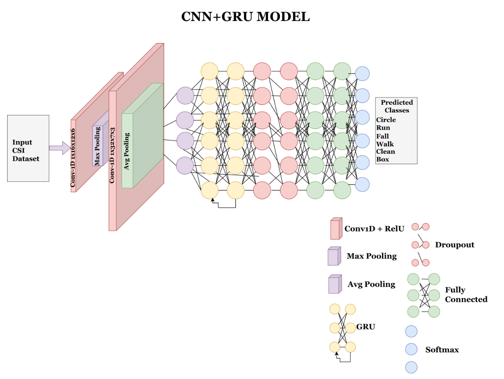

Exploring Human Activity Recogntion Using WiFi CSI Data
Mack Werner, Ryan Frost, and Jacqueline NewlandFall 2025 ECE 4554/5554 Computer Vision: Course Project
Virginia Tech
Problem Statement
The goal of this project is to explore the intersection of computer vision and RF sensing by exploiting properties of the wireless channel to gather information about human activity. Specifically, we aim to use WiFi Channel State Information (CSI) with vision-orineted deep learning techniques to perform Human Activity Recognition (HAR).Core Concept Visual
 Figure 1. WiFi-based Human Activity Recognition Pipeline [1]
Figure 1. WiFi-based Human Activity Recognition Pipeline [1]
Technical Approach
Our approach will build on recent research in CSI-based HAR. As a baseline, we will reproduce the results from Wakili et al [1], which uses a CNN + GRU pipeline. Extending beyond that baseline we will test on the OperaNET CSI dataset and compare our classification performance with another group's training on passive WiFi radar datasets. Using PyTorch, TensorFlow, and OpenCV we will implement the model and preprocessing. To gauge the effectiveness of our approach, we will evaluate accuracy, confusion matrices, F1 scores, and qualitative comparisons of activity categories.Datasets
Experimental Setup
Our experiment setup begins with data preprocessing, where we will extract and normalize the amplitude and phase of CSI signals to prepare them for learning. Once the data is processed, we will proceed to model training, using CNN layers to capture spatial features in the CSI patterns, followed by GRU layers to model the temporal dependencies inherent in human activity sequences. With this model, we will first focus on baseline replication, training and validating on the UT-HAR dataset to reproduce the results reported in the 2025 paper. After establishing this baseline, we will move to cross-dataset validation, applying our trained model to the OperaNET dataset to test how well the learned representations generalize across different CSI data sources.

Figure 2. CNN+GRUP Model Architecture [1]
Implementation
The implementation will be a combination of original coding and borrowed tools. We plan to develop our own preprocessing pipeline, CNN + GRU training scripts, and evaluation metrics. At the same time, we will leverage open-source implementations in PyTorch and Tensor Flow to adapt baseline architectures for CSI classification, allowing us to benchmark our system efficiently.Success Criteria
We will define success as the ability to replicate the published accuracy on UT-HAR, showing that our reproduction is faithful to the original study. Beyond that, success will also require demonstrating robust cross-dataset performance on OperaNET, as this will indicate the model’s capacity to generalize beyond a single experimental setup. Finally, we expect our experiments to yield insights into the transferability of CSI-based models across environments, which will help assess the broader potential of WiFi CSI in HAR.References
[1] A. A. Wakili, B. J. Asaju, and W. Jung, "Evaluating BiLSTM and CNN+GRU Approaches for Human Activity Recognition Using WiFi CSI Data," in Proc. 23rd IEEE/ACIS Int. Conf. Softw. Eng., Manage. Appl. (SERA), 2025, arXiv:2506.11165.[2] Bocus, M.J., Li, W., Vishwakarma, S. et al. OPERAnet, a multimodal activity recognition dataset acquired from radio frequency and vision-based sensors. Sci Data 9, 474 (2022). https://doi.org/10.1038/s41597-022-01573-2